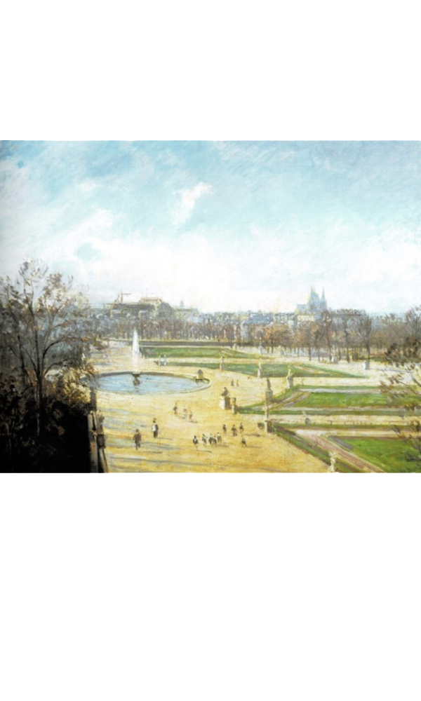

<div class="detail_content">
	<div class="img_book">
		
	</div>
	<section class="book_description">
		<h4>될르리 정원의 오후 태양</h4>
		<ul class="bullet_list">
			<li><em>화가 </em> 카미유 피사로</li>
			<li><em>제작 시기 </em> 1900년</li>
			<li><em>특징 </em> 큰 크기</li>
			
		</ul>
		<p class="point_text">
			<strong>넓은 캔버스에 탁 트인 정원</strong>
			<br>화사하고 섬세한 표현
		</p>
		
	</section>
</div>